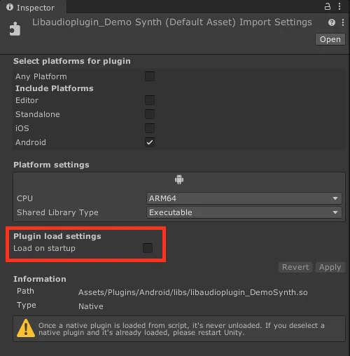

Introduction
Previously, I mentioned that the JUCE Message Manager relies on JNI (Java Native Interface) on Android. This reliance is because JUCE needs to interact with the Android OS through Java. Consequently, when the audio plugin in your Unity application loads on startup, it crashes due to the uninitialized JNI dependencies required by JUCE. I had attempted to work around this by reimplementing the JUCE message queue in C++ on Android, but I have now found a better solution and am excited to share it with you.
First time building a JUCE plugin for Unity on Android? Check out the previous article, where I explain how to enable the Unity plugin format and build a JUCE plugin for Android using CMake.
Initializing JUCE Before Loading the Plugin
As the documentation states, we need to call Thread::initialiseJUCE before loading the plugin. We need to pass in the Java context to this method from our Unity application before we can use any JUCE APIs.
Our strategy is to disable the auto-loading of the plugin in Unity and then load the plugin after the initialiseJUCE method has been called. This means we will need a bootstrapper scene before loading another scene that uses a mixer with the plugin added to it. The bootstrapper scene will call the initialiseJUCE method via a Java class. To execute Java code in our Unity application, we will use the AndroidJavaClass class of the Unity API.
Once the initialiseJUCE method has been called, we will need to load the plugin's DLL in the C# domain. Failing to do this will result in an error when loading the main scene:
Audio effect "DemoSynth" could not be found. Check that the project contains the correct native audio plugin libraries and that the importer settings are set up correctly.
Calling any method with P/Invoke will load the plugin's DLL in the .NET runtime. We should do this before loading the scene that uses the plugin.
After the plugin's DLL has been loaded, we can load the main scene. Everything should work smoothly from there.
Setup Steps
- Untick "Load on startup" in your plugin's settings in Unity:

You can still keep the plugin auto-load in other platforms like Windows, macOS, and iOS.
- Add a Java class with the following content:
package com.rmsl.juce;
import android.content.Context;
public class Java {
static { System.loadLibrary("audioplugin_DemoSynth"); } // Replace the lib name with your plugin's name.
public native static void initialiseJUCE(Context context);
}
I keep the following folder structure in the Assets folder:
Plugins
└─Android
├─libs
│ └─libaudioplugin_DemoSynth.so
└─src
└─com
└─rmsl
└─juce
└─Java.java
- Add the following script to the bootstrapper scene:
using UnityEngine;
public class JUCEInitializer : MonoBehaviour
{
private void Start()
{
#if UNITY_ANDROID && !UNITY_EDITOR
using (AndroidJavaClass unityPlayer = new AndroidJavaClass("com.unity3d.player.UnityPlayer"))
{
AndroidJavaObject activity = unityPlayer.GetStatic<AndroidJavaObject>("currentActivity");
// Get the application context
AndroidJavaObject context = activity.Call<AndroidJavaObject>("getApplicationContext");
// Call the initialiseJUCE method
using (AndroidJavaClass juceJava = new AndroidJavaClass("com.rmsl.juce.Java"))
{
juceJava.CallStatic("initialiseJUCE", context);
}
// Load the demo synth plugin by calling a method in the DemoSynth class. Note that it doesn't really matter which method you call, the important thing is that the plugin's .so file is loaded in the .NET runtime.
DemoSynth.getInstance();
}
#else
Debug.Log("JUCEInitializer: Not on Android, skipping JUCE initialization");
#endif
LoadNextScene();
}
private void LoadNextScene()
{
UnityEngine.SceneManagement.SceneManager.LoadScene("YourSceneName");
}
}
You probably want to have a more sophisticated way of loading scenes in your project. This code snippet is just for demonstration purposes; consider firing off an event after initialization that will load the next scene.
The Call Order
Once you set up the scene correctly, the call order will be as follows:
Bootstrapper scene
- The
JUCEInitializerMonoBehaviour is loaded, which calls theinitialiseJUCEmethod in your Java class. - The Java method loads the plugin's
.sofile and passes in the Java context to the JUCE runtime. This enables the JUCE submodules correctly, as outlined in the JUCE documentation. - Call any method in the native plugin from a MonoBehaviour to load the
.soin the .NET runtime. - Load the scene that uses the mixer.
Main scene
- The mixer with the plugin is loaded. Unity will call
UnityGetAudioEffectDefinitions(), which is the entry point for the plugin. MessageManager::doPlatformSpecificInitialisation()is called, which will not crash the application because the JUCE runtime has been initialized correctly.createPluginFilter()is called, creating theAudioProcessorinstance with all of JUCE's facilities available to it.
Conclusion
By initializing JUCE before loading the plugin, you can ensure that your JUCE plugins work smoothly in Android Unity projects. Following the outlined steps will prevent crashes and enable the JUCE submodules correctly, providing a stable environment for your audio plugins.
The main takeaway from researching this topic is that native audio plugins in Unity don't need to be loaded on startup. You can load them when needed, which helps resolve any initialization issues you might encounter. I previously thought there was no way to execute any code before the plugin was loaded, but I was wrong. Discovering this meant I could fully unlock the potential of JUCE plugins in Android Unity projects.
I made all code examples available on GitHub in the following repositories: Unity project, Plugin project, My JUCE fork.
This should get you started with building JUCE plugins for Android Unity projects. Let me know if you have any questions or suggestions.